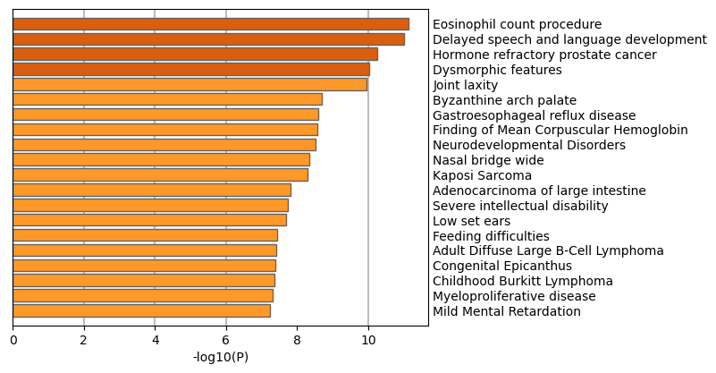

Metascape Gene List Analysis Report
metascape.org1
Bar Graph Summary
Gene Lists
User-provided gene identifiers are first converted into their corresponding H. sapiens Entrez gene IDs using the latest version of the database (last updated on 2021-08-01). If multiple identifiers correspond to the same Entrez gene ID, they will be considered as a single Entrez gene ID in downstream analyses. The gene lists are summarized in Table 1.
Table 1. Statistics of input gene lists.
| Name |
Total |
Unique |
| MyList |
503 |
501 |
Gene Annotation
The following are the list of annotations retrieved from the latest version of the database (last updated on 2021-08-01) (Table 2).
Table 2. Gene annotations extracted
| Name |
Type |
Description |
| Gene Symbol |
Description |
Primary HUGO gene symbol. |
| Description |
Description |
Short description. |
| Biological Process (GO) |
Function/Location |
Descriptions summarized based on gene ontology database, where up to three most informative GO terms are kept. |
| Kinase Class (UniProt) |
Function/Location |
Detailed kinase classes. |
| Protein Function (Protein Atlas) |
Function/Location |
Protein Function (Protein Atlas) |
| Subcellular Location (Protein Atlas) |
Function/Location |
Sucellular Location (Protein Atlas) |
| Drug (DrugBank) |
Genotype/Phenotype/Disease |
Drug information for the given gene as target. |
| Canonical Pathways
|
Ontology |
Canonical Pathways
|
| Hallmark Gene Sets
|
Ontology |
Hallmark Gene Sets
|
Pathway and Process Enrichment Analysis
For each given gene list, pathway and process enrichment analysis has been carried out with the following ontology sources: KEGG Pathway, GO Biological Processes, Reactome Gene Sets, Canonical Pathways, CORUM, TRRUST, DisGeNET, PaGenBase, Transcription Factor Targets, WikiPathways, PANTHER Pathway and COVID. All genes in the genome have been used as the enrichment background. Terms with a p-value < 0.01, a minimum count of 3, and an enrichment factor > 1.5 (the enrichment factor is the ratio between the observed counts and the counts expected by chance) are collected and grouped into clusters based on their membership similarities. More specifically, p-values are calculated based on the accumulative hypergeometric distribution
2, and q-values are calculated using the Banjamini-Hochberg procedure to account for multiple testings
3. Kappa scores
4 are used as the similarity metric when performing hierachical clustering on the enriched terms, and sub-trees with a similarity of > 0.3 are considered a cluster. The most statistically significant term within a cluster is chosen to represent the cluster.
Table 3. Top 20 clusters with their representative enriched terms (one per cluster). "Count" is the number of genes in the user-provided lists with membership in the given ontology term. "%" is the percentage of all of the user-provided genes that are found in the given ontology term (only input genes with at least one ontology term annotation are included in the calculation). "Log10(P)" is the p-value in log base 10. "Log10(q)" is the multi-test adjusted p-value in log base 10.
| GO |
Category |
Description |
Count |
% |
Log10(P) |
Log10(q) |
| GO:0016569 |
GO Biological Processes |
covalent chromatin modification |
37 |
7.39 |
-12.98 |
-8.62 |
| GO:0046649 |
GO Biological Processes |
lymphocyte activation |
46 |
9.18 |
-12.01 |
-8.09 |
| GO:0006913 |
GO Biological Processes |
nucleocytoplasmic transport |
26 |
5.19 |
-10.41 |
-6.76 |
| GO:0006914 |
GO Biological Processes |
autophagy |
32 |
6.39 |
-8.66 |
-5.54 |
| GO:0046488 |
GO Biological Processes |
phosphatidylinositol metabolic process |
17 |
3.39 |
-8.38 |
-5.32 |
| R-HSA-1059683 |
Reactome Gene Sets |
Interleukin-6 signaling |
6 |
1.20 |
-7.88 |
-4.90 |
| GO:0006405 |
GO Biological Processes |
RNA export from nucleus |
12 |
2.40 |
-7.51 |
-4.70 |
| WP395 |
WikiPathways |
IL-4 signaling pathway |
10 |
2.00 |
-7.38 |
-4.61 |
| R-HSA-8878171 |
Reactome Gene Sets |
Transcriptional regulation by RUNX1 |
19 |
3.79 |
-7.17 |
-4.46 |
| GO:0035303 |
GO Biological Processes |
regulation of dephosphorylation |
14 |
2.79 |
-7.14 |
-4.44 |
| GO:1903047 |
GO Biological Processes |
mitotic cell cycle process |
35 |
6.99 |
-6.91 |
-4.27 |
| GO:0002262 |
GO Biological Processes |
myeloid cell homeostasis |
15 |
2.99 |
-6.78 |
-4.16 |
| hsa04120 |
KEGG Pathway |
Ubiquitin mediated proteolysis |
14 |
2.79 |
-6.77 |
-4.16 |
| R-HSA-3108232 |
Reactome Gene Sets |
SUMO E3 ligases SUMOylate target proteins |
16 |
3.19 |
-6.73 |
-4.15 |
| R-HSA-194315 |
Reactome Gene Sets |
Signaling by Rho GTPases |
34 |
6.79 |
-6.70 |
-4.13 |
| M124 |
Canonical Pathways |
PID CXCR4 PATHWAY |
12 |
2.40 |
-6.65 |
-4.10 |
| GO:0051129 |
GO Biological Processes |
negative regulation of cellular component organization |
35 |
6.99 |
-6.60 |
-4.07 |
| GO:0000226 |
GO Biological Processes |
microtubule cytoskeleton organization |
31 |
6.19 |
-6.40 |
-3.94 |
| GO:0006511 |
GO Biological Processes |
ubiquitin-dependent protein catabolic process |
31 |
6.19 |
-6.28 |
-3.84 |
| GO:0017015 |
GO Biological Processes |
regulation of transforming growth factor beta receptor signaling pathway |
13 |
2.59 |
-6.26 |
-3.81 |
To further capture the relationships between the terms, a subset of enriched terms have been selected and rendered as a network plot, where terms with a similarity > 0.3 are connected by edges. We select the terms with the best p-values from each of the 20 clusters, with the constraint that there are no more than 15 terms per cluster and no more than 250 terms in total. The network is visualized using
Cytoscape5, where each node represents an enriched term and is colored first by its cluster ID (Figure 2.a) and then by its p-value (Figure 2.b). These networks can be interactively viewed in Cytoscape through the .cys files (contained in the Zip package, which also contains a publication-quality version as a PDF) or within a browser by clicking on the web icon. For clarity, term labels are only shown for one term per cluster, so it is recommended to use Cytoscape or a browser to visualize the network in order to inspect all node labels. We can also export the network into a PDF file within Cytoscape, and then edit the labels using Adobe Illustrator for publication purposes. To switch off all labels, delete the "Label" mapping under the "Style" tab within Cytoscape, and then export the network view.
Figure 2. Network of enriched terms: (a) colored by cluster ID, where nodes that share the same cluster ID are typically close to each other; (b) colored by p-value, where terms containing more genes tend to have a more significant p-value.
Protein-protein Interaction Enrichment Analysis
For each given gene list, protein-protein interaction enrichment analysis has been carried out with the following databases: STRING
6, BioGrid
7, OmniPath
8, InWeb_IM
9.Only physical interactions in STRING (physical score > 0.132) and BioGrid are used (
details). The resultant network contains the subset of proteins that form physical interactions with at least one other member in the list. If the network contains between 3 and 500 proteins, the Molecular Complex Detection (MCODE) algorithm
10 has been applied to identify densely connected network components. The MCODE networks identified for individual gene lists have been gathered and are shown in Figure 3.
Pathway and process enrichment analysis has been applied to each MCODE component independently, and the three best-scoring terms by p-value have been retained as the functional description of the corresponding components, shown in the tables underneath corresponding network plots within Figure 3.
Figure 3. Protein-protein interaction network and MCODE components identified in the gene lists.
| | |


| |
|
| GO |
Description |
Log10(P) |
| GO:0016569 |
covalent chromatin modification |
-14.9 |
| GO:0016570 |
histone modification |
-13.7 |
| GO:0051169 |
nuclear transport |
-11.8 |
| |
| Color |
MCODE |
GO |
Description |
Log10(P) |
|
MCODE_1 |
R-HSA-72163 |
mRNA Splicing - Major Pathway |
-11.0 |
|
MCODE_1 |
R-HSA-72172 |
mRNA Splicing |
-10.8 |
|
MCODE_1 |
CORUM:1257 |
ALL-1 supercomplex |
-10.1 |
|
MCODE_2 |
R-HSA-2500257 |
Resolution of Sister Chromatid Cohesion |
-5.5 |
|
MCODE_2 |
R-HSA-2467813 |
Separation of Sister Chromatids |
-4.8 |
|
MCODE_2 |
R-HSA-68877 |
Mitotic Prometaphase |
-4.7 |
|
MCODE_3 |
ko03013 |
RNA transport |
-8.9 |
|
MCODE_3 |
hsa03013 |
RNA transport |
-8.8 |
|
MCODE_3 |
WP3888 |
VEGFA-VEGFR2 signaling pathway |
-8.0 |
|
MCODE_4 |
M40 |
PID E2F PATHWAY |
-7.0 |
|
MCODE_4 |
GO:0018205 |
peptidyl-lysine modification |
-5.6 |
|
MCODE_4 |
M261 |
PID P53 REGULATION PATHWAY |
-5.2 |
|
MCODE_5 |
R-HSA-983168 |
Antigen processing: Ubiquitination & Proteasome degradation |
-23.6 |
|
MCODE_5 |
R-HSA-983169 |
Class I MHC mediated antigen processing & presentation |
-22.6 |
|
MCODE_5 |
R-HSA-1280218 |
Adaptive Immune System |
-18.8 |
|
MCODE_6 |
GO:0050863 |
regulation of T cell activation |
-4.8 |
|
MCODE_6 |
GO:1903037 |
regulation of leukocyte cell-cell adhesion |
-4.8 |
|
MCODE_6 |
GO:0007159 |
leukocyte cell-cell adhesion |
-4.7 |
|
MCODE_8 |
R-HSA-8943724 |
Regulation of PTEN gene transcription |
-8.0 |
|
MCODE_8 |
M101 |
PID HDAC CLASSI PATHWAY |
-7.9 |
|
MCODE_8 |
R-HSA-6807070 |
PTEN Regulation |
-6.9 |
|
Quality Control and Association Analysis
Gene list enrichments are identified in the following ontology categories: Transcription_Factor_Targets, DisGeNET, PaGenBase, COVID. All genes in the genome have been used as the enrichment background. Terms with a p-value < 0.01, a minimum count of 3, and an enrichment factor > 1.5 (the enrichment factor is the ratio between the observed counts and the counts expected by chance) are collected and grouped into clusters based on their membership similarities. The top few enriched clusters (one term per cluster) are shown in the Figure 4-7. The algorithm used here is the same as that is used for pathway and process enrichment analysis.
Figure 4. Summary of enrichment analysis in Transcription_Factor_Targets11.
|
|
|
|
| GO |
Description |
Count |
% |
Log10(P) |
Log10(q) |
| M3265 |
NFMUE1 Q6 |
21 |
4.20 |
-8.30 |
-5.10 |
| M171 |
GCCATNTTG YY1 Q6 |
26 |
5.20 |
-7.00 |
-4.10 |
| M30333 |
ZNF507 TARGET GENES |
32 |
6.40 |
-6.60 |
-3.80 |
| M18044 |
AAGWWRNYGGC UNKNOWN |
13 |
2.60 |
-6.50 |
-3.70 |
| M29991 |
HDAC4 TARGET GENES |
32 |
6.40 |
-6.20 |
-3.40 |
| M18461 |
ARNT 01 |
18 |
3.60 |
-5.70 |
-3.10 |
| M18078 |
E4BP4 01 |
16 |
3.20 |
-5.60 |
-3.00 |
| M29944 |
DMRT1 TARGET GENES |
22 |
4.40 |
-5.30 |
-2.80 |
| M13190 |
USF 01 |
17 |
3.40 |
-5.20 |
-2.80 |
| M18224 |
MAX 01 |
17 |
3.40 |
-5.20 |
-2.70 |
| M11698 |
YY1 Q6 |
16 |
3.20 |
-4.90 |
-2.50 |
| M12880 |
YY1 02 |
16 |
3.20 |
-4.90 |
-2.50 |
| M29957 |
EMX1 TARGET GENES |
15 |
3.00 |
-4.90 |
-2.50 |
| M9795 |
ARNT 02 |
16 |
3.20 |
-4.80 |
-2.40 |
| M16653 |
GATGKMRGCG UNKNOWN |
8 |
1.60 |
-4.70 |
-2.30 |
| M17944 |
MYCMAX 03 |
16 |
3.20 |
-4.60 |
-2.30 |
| M11913 |
COUP 01 |
16 |
3.20 |
-4.60 |
-2.30 |
| M15359 |
CREBP1 01 |
13 |
2.60 |
-4.60 |
-2.30 |
| M3024 |
MYCMAX 02 |
16 |
3.20 |
-4.50 |
-2.20 |
| M10112 |
RNGTGGGC UNKNOWN |
31 |
6.20 |
-4.50 |
-2.20 |
|
Figure 5. Summary of enrichment analysis in DisGeNET12.
|

|
|
|
| GO |
Description |
Count |
% |
Log10(P) |
Log10(q) |
| C0200638 |
Eosinophil count procedure |
39 |
7.80 |
-11.00 |
-7.20 |
| C0454644 |
Delayed speech and language development |
37 |
7.40 |
-11.00 |
-7.20 |
| C1328504 |
Hormone refractory prostate cancer |
40 |
8.00 |
-10.00 |
-6.60 |
| C0432072 |
Dysmorphic features |
31 |
6.20 |
-10.00 |
-6.50 |
| C0086437 |
Joint laxity |
22 |
4.40 |
-9.90 |
-6.40 |
| C0240635 |
Byzanthine arch palate |
31 |
6.20 |
-8.70 |
-5.40 |
| C0017168 |
Gastroesophageal reflux disease |
29 |
5.80 |
-8.60 |
-5.30 |
| C1261502 |
Finding of Mean Corpuscular Hemoglobin |
36 |
7.20 |
-8.60 |
-5.30 |
| C1535926 |
Neurodevelopmental Disorders |
32 |
6.40 |
-8.50 |
-5.30 |
| C1849367 |
Nasal bridge wide |
28 |
5.60 |
-8.30 |
-5.20 |
| C0036220 |
Kaposi Sarcoma |
30 |
6.00 |
-8.30 |
-5.10 |
| C1319315 |
Adenocarcinoma of large intestine |
31 |
6.20 |
-7.80 |
-4.70 |
| C0036857 |
Severe intellectual disability |
27 |
5.40 |
-7.70 |
-4.60 |
| C0239234 |
Low set ears |
29 |
5.80 |
-7.70 |
-4.60 |
| C0232466 |
Feeding difficulties |
28 |
5.60 |
-7.40 |
-4.40 |
| C1332201 |
Adult Diffuse Large B-Cell Lymphoma |
29 |
5.80 |
-7.40 |
-4.40 |
| C0678230 |
Congenital Epicanthus |
26 |
5.20 |
-7.40 |
-4.40 |
| C0278879 |
Childhood Burkitt Lymphoma |
28 |
5.60 |
-7.40 |
-4.40 |
| C0027022 |
Myeloproliferative disease |
24 |
4.80 |
-7.30 |
-4.30 |
| C0026106 |
Mild Mental Retardation |
23 |
4.60 |
-7.20 |
-4.30 |
|
Figure 6. Summary of enrichment analysis in PaGenBase13.

|
|
|
| GO |
Description |
Count |
% |
Log10(P) |
Log10(q) |
| PGB:00042 |
Tissue-specific: corpus callosum |
5 |
1.00 |
-3.30 |
-1.40 |
| PGB:00115 |
Cell-specific: CD33+ Myeloid |
4 |
0.80 |
-2.20 |
-0.69 |
|
Figure 7. Summary of enrichment analysis in COVID14.
|
|
|
|
| GO |
Description |
Count |
% |
Log10(P) |
Log10(q) |
| COVID055 |
Phosphoproteome_Bouhaddou_Vero_E6_0h_Down |
30 |
6.00 |
-14.00 |
-10.00 |
| COVID234 |
Phosphoproteome_Klann_Caco-2_24h_Down |
30 |
6.00 |
-14.00 |
-9.30 |
| COVID061 |
Phosphoproteome_Bouhaddou_Vero_E6_2h_Down |
29 |
5.80 |
-13.00 |
-8.70 |
| COVID051 |
RNA_Xiong_BALF_Down |
26 |
5.20 |
-10.00 |
-6.80 |
| COVID057 |
Phosphoproteome_Bouhaddou_Vero_E6_12h_Down |
26 |
5.20 |
-10.00 |
-6.80 |
| COVID059 |
Phosphoproteome_Bouhaddou_Vero_E6_24h_Down |
24 |
4.80 |
-9.00 |
-5.60 |
| COVID065 |
Phosphoproteome_Bouhaddou_Vero_E6_8h_Down |
24 |
4.80 |
-9.00 |
-5.60 |
| COVID131 |
Phosphoproteome_Stukalov_A549-ACE2_24h_Up |
24 |
4.80 |
-9.00 |
-5.60 |
| COVID193 |
RNA_Stukalov_A549-ACE2_30h_Up |
24 |
4.80 |
-9.00 |
-5.60 |
| COVID323 |
RNA_Wilk_CD4+T-cells_patient-C2_Up |
8 |
1.60 |
-8.80 |
-5.50 |
| COVID372 |
Interactome_Laurent_HEK293_24h_NSP16 |
23 |
4.60 |
-8.70 |
-5.40 |
| COVID010 |
RNA_Blanco-Melo_A549-ACE2_Up |
22 |
4.40 |
-7.60 |
-4.50 |
| COVID235 |
Phosphoproteome_Klann_Caco-2_24h_Up |
22 |
4.40 |
-7.60 |
-4.50 |
| COVID343 |
RNA_Wilk_B-cells_patient-C4_Up |
14 |
2.80 |
-7.50 |
-4.40 |
| COVID063 |
Phosphoproteome_Bouhaddou_Vero_E6_4h_Down |
17 |
3.40 |
-7.00 |
-4.10 |
| COVID040 |
RNA_Sun_Calu-3_24h_Up |
21 |
4.20 |
-6.90 |
-4.00 |
| COVID240 |
RNA_Lieberman_Nasopharynx_High_vs_Low_Down |
16 |
3.20 |
-6.50 |
-3.70 |
| COVID243 |
RNA_Riva_Vero-E6_24h_Up |
20 |
4.00 |
-6.30 |
-3.50 |
| COVID302 |
RNA_Wilk_NK-cells_patient-C7_Down |
7 |
1.40 |
-6.10 |
-3.40 |
| COVID368 |
Interactome_Laurent_HEK293_24h_NSP12 |
18 |
3.60 |
-6.10 |
-3.40 |
|
Reference
- Zhou et al., Metascape provides a biologist-oriented resource for the analysis of systems-level datasets. Nature Communications (2019) 10(1):1523.
- Zar, J.H. Biostatistical Analysis 1999 4th edn., NJ Prentice Hall, pp. 523
- Hochberg Y., Benjamini Y. More powerful procedures for multiple significance testing. Statistics in Medicine (1990) 9:811-818.
- Cohen, J. A coefficient of agreement for nominal scales. Educ. Psychol. Meas. (1960) 20:27-46.
- Shannon P. et al., Cytoscape: a software environment for integrated models of biomolecular interaction networks. Genome Res (2003) 11:2498-2504.
- Szklarczyk D. et al. STRING v11: protein-protein association networks with increased coverage, supporting functional discovery in genome-wide experimental datasets. Nucleic Acids Res. (2019) 47:D607-613.
- Stark C. et al. BioGRID: a general repository for interaction datasets. Nucleic Acids Res. (2006) 34:D535-539.
- Turei D. et al. A scored human protein-protein interaction network to catalyze genomic interpretation. Nat. Methods. (2016) 13:966-967.
- Li T. et al. A scored human protein-protein interaction network to catalyze genomic interpretation. Nat. Methods. (2017) 14:61-64.
- Bader, G.D. et al. An automated method for finding molecular complexes in large protein interaction networks. BMC bioinformatics (2003) 4:2.
- Subramanian A, et al. Gene set enrichment analysis: A knowledge-based approach for interpreting genome-wide expression profiles. Proc Natl Acad Sci U S A 102, 15545-15550 (2005).
- Pinero J, et al. DisGeNET: a comprehensive platform integrating information on human disease-associated genes and variants. Nucleic acids research 45, D833-D839 (2017).
- Pan JB, et al. PaGenBase: a pattern gene database for the global and dynamic understanding of gene function. PLoS One 8, e80747 (2013).
- https://metascape.org/COVID.
{kind=link}
{kind=link}